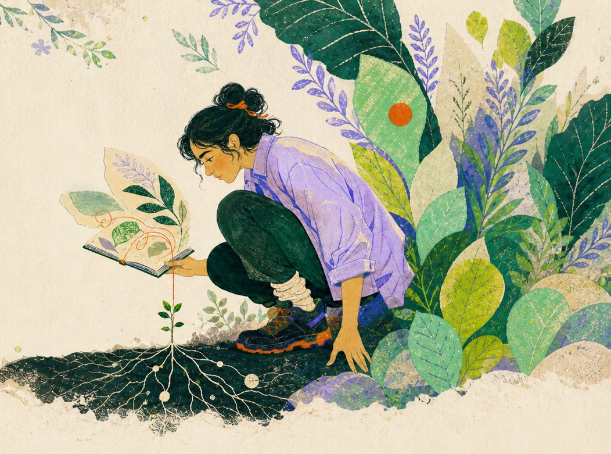

Currently creatingHello, I’m Tammana
I teach, design & make small things with big curiosity.
Welcome to my little corner of the internet.
Educator · designer · vibe coder · curious maker
London, UK
Currently creatingHello, I’m Tammana
Welcome to my little corner of the internet.
A little context
I’m an educator, designer, vibe coder and curious maker based in London. I worked as a learning support assistant, and I build small, thoughtful things for the web.
Whether I’m adapting a lesson or designing an interface, I care about making things clear, welcoming and a little more human.
Selected work
Away from the screen
A note can become a nice thing
I’m always happy to hear about thoughtful projects, creative collaborations or the hobby you think I should try next.
I usually reply within a day or two, tea in hand.